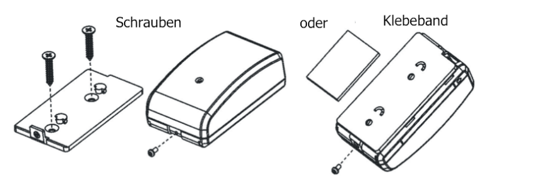

VIS_ZS5101
Firmware Version : 4.84 |
 |
KurzinfoS Dieses Gerät ist ein Z-Wave-Sensor. Drücken Sie zum Inkludieren oder Exkludieren des Gerätes den Manipulationssicherungsschalter hinter der Batterieabdeckung. Das Öffnen der Abdeckung weckt das Gerät auf und hält es im Wachzustand. Weitergehende Informationen finden sich in den jeweiligen Abschnitten dieses Handbuches. |
Produktbeschreibung
Dieser Z-Wave Schock Sensor liefert Informationen über Vibrationen, die durch einen Einbrecher beim Einschlagen eines Fensters oder Aufbrechen einer Tür entstehen. Wird eine solche Vibration erkannt, sendet der Sensor ein Alarmsignal an den Controller und die LED des Sensors leuchtet auf. Die Empfindlichkeit des Sensors kann mittels eines Stellrades eingestellt werden. Das Gerät verfügt zusätzlich über eine Manipulationssicherung, die bei unbefugter Entfernung ein Signal über Z-Wave an einen Controller sendet.
Das Öffnen der Abdeckung und somit Betätigen des Manipulationssicherungsschalters weckt das Gerät auf und hält es im Wachzustand.
Ein Druck auf den Manipulationssicherungsschalter führt zum Senden eines Node Information Frame.
Installationsanleitung
Der Sensor kann mittels doppelseitigem Klebeband an jeder flachen Fläche installiert werden. Für Sicherheitsanwendungen sollte der Sensor über die mitgelieferten Schrauben fest mit der Oberfläche verschraubt werden.
Die Empfindlichkeit des Vibrationssensors kann mittels eines kleinen Schraubendrehers angepasst werden. Drehen im Uhrzeigersinn erhöht, entgegen dem Uhrzeigersinn veringert die Empfindlichkeit.
Verhalten des Gerätes im Z-Wave Netz
I Im Auslieferungszustand ist das Gerät mit keinem Z-Wave-Netz verbunden. Damit es mit anderen Z-Wave Geräten kommunizieren kann, muss es in ein bestehendes Z-Wave Netz eingebunden werden. Dieser Prozess wird bei Z-Wave Inklusion genannt. Geräte können Netzwerke auch wieder verlassen. Dieser Prozess heißt bei Z-Wave Exklusion. Beide Prozesse werden von einem Controller gestartet, der dazu in einen Inklusion- bzw. Exklusion-Modus geschaltet werden muss. Das Handbuch des Controllers enthält Informationen, wie er in diese Modi zu schalten ist. Erst wenn der Controller des Z-Wave Netzes im Inclusion-Modus ist, können Geräte hinzugefügt werden. Das Verlassen des Netzes durch Exklusion führt zum Rücksetzen dieses Gerätes in den Auslieferungszustand.
Bedienung des Gerätes
Der installierte Sensor sendet bei Vibration ein Signal aus. Dieses kann zum Steuern weiterer Funktionen (z.B. Licht) oder auch zum Auslösen eines Alarms genutzt werden.
Assoziationen - wie werden andere Geräte gesteuert?
A Z-Wave Geräte können andere Geräte direkt steuern. Diese direkte Steuerung heißt in Z-Wave Assoziation. In den steuernden Geräten muss dazu die Geräte-ID des zu steuernden Gerätes hinterlegt werden. Dies erfolgt in sogenannten Assoziationsgruppen. Eine Assoziationsgruppe ist immer an ein Ereignis im steuernden Gerät gebunden (Tastendruck oder Auslösen eines Sensors). Bei Eintritt dieses Ereignisses wird an alle in einer Assoziationsgruppe hinterlegten Geräte ein Steuerkommando gesendet.
Assoziationsgruppen:
| 1 | sendet Kommando bei erkannter Vibration (max. Anzahl Geräte: 5) |
Technische Daten
| Batterietyp | 1 * CR123A |
| Explorer Frames | Ja |
| SDK | 4.54 |
| Geräteart | Slave with routing capabilities |
| Allgemeiner Z-Wave-Gerätetyp | Binary Sensor |
| Spezieller Z-Wave-Gerätetyp | Routing Binary Sensor |
| Router | Nein |
| FLiRS | Nein |
| Firmware Version | 4.84 |